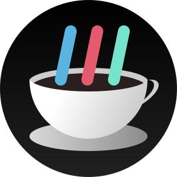

<footer>
  <section>
    <div>
      <h2>Meus Contatos:</h2>
      <button mat-raised-button color="primary">LinkedIn</button>
      <button mat-raised-button color="primary">GitHub</button>
      <button mat-raised-button color="primary">WhatsApp</button>
      <button mat-raised-button color="primary">Gmail</button>
    </div>
    
  </section>
</footer>
